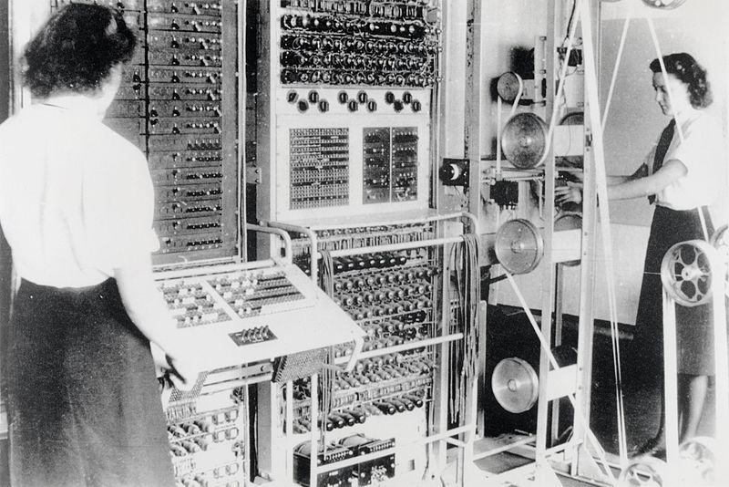

COMPUTER
| A female computer, with microscope and calculator, 1952 According to the Oxford English Dictionary, the first known use of the word "computer" was in 1613 in a book called The Yong Mans Gleanings by English writer Richard Braithwait: "I haue [sic] read the truest computer of Times, and the best Arithmetician that euer [sic] breathed, and he reduceth thy dayes into a short number." This usage of the term referred to a human computer, a person who carried out calculations or computations. The word continued with the same meaning until the middle of the 20th century. From the end of the 19th century the word began to take on its more familiar meaning, a machine that carries out computations. | |
| "Computer system" redirects here. For other uses, see Computer (disambiguation) and Computer system (disambiguation). Computer Acer Aspire 8920 Gemstone.jpgColumbia Supercomputer - NASA Advanced Supercomputing Facility.jpgIntertec Superbrain.jpg 2010-01-26-technikkrempel-by-RalfR-05.jpgThinking Machines Connection Machine CM-5 Frostburg 2.jpgG5 supplying Wikipedia via Gigabit at the Lange Nacht der Wissenschaften 2006 in Dresden.JPG DM IBM S360.jpgAcorn BBC Master Series Microcomputer.jpgDell PowerEdge Servers.jpg Computers and computing devices from different eras |  |